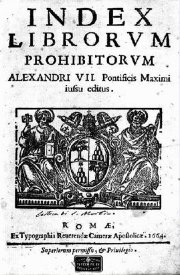

Obsah
Svìtové baroko
Èeské baroko
+ Komedie dell’arte

Øímská fontána di Trevi od Nicoly Salviho
|
BAROKO
Od 16. stol. se prosazuje nový sloh, který postupnì vystøídal renesanci a manýrismus. Baroko je svázáno pøedevším s katolickými zemìmi a urèovalo podobu umìní až do 18. století. Jeho název by se dal pøeložit jako nepravidelná perla (portugalsky barocco). Barokní tvorba je charakteristická niternou zbožností, dramatièností, expresivitou a dùrazem na vnìjší efekt.
V 18. století vyústilo baroko v rokoko. Pro tento styl je naopak typická hravost a lehkost. Název rokoko vznikl z francouzského výrazu pro mušlièku (rocaille).
V 16. stol. se ustavily první protestantské církve (luteráni, kalvinisté, anglikáni, novokøtìnci...) Augšpurský náboženský mír (1555) umožnil nìmeckým knížatùm svobodnou volbu vyznání. Poddaní se museli rozhodnutí svého pána podøídit podle zásady „èí zemì, toho víra". Obyvatelé Falce díky tomu museli v krátké dobì šestkrát zmìnit konfesi…
Katolická církev reagovala na rozmáhající se odpadlictví protireformací a cílenou rekatolizací.
Nové rozdìlení Evropy vyústilo v tøicetiletou válku.
|
Historie
Tøicetiletá válka (1618-1648) byla konfliktem mocenským i náboženským. Støetly se v ní dva velké tábory – Protestantská unie (1608) a Katolická liga (1609). Válka zdecimovala evropskou populaci. Vestfálský mír (1648) potvrdil nové uspoøádání v Evropì z roku 1624, která se definitivnì rozdìlila na dvì oblasti – katolickou a protestantskou.
|
Inkvizice

Víš, co je autodafé?
|
Inkvizice
Inkvizice vznikla už v roce 1215 jako nástroj k potírání kacíøství. Jejím vedením byl povìøen nový øád dominikánù. S kacíøi se konaly neveøejné soudní procesy (vyšetøování, soudní øízení i vynesení rozsudku bylo v jednìch rukou a bez možnosti obhajoby), pøiznání se vynucovalo muèením a obvyklým trestem bylo upálení za živa. V roce 1542 získala tato církevní instituce název Sacrum Officium a stala se nástrojem násilné rekatolizace. Zbìsilý hon na èarodìjnice odstartovalo vydání Kladiva na èarodìjnice (1487), které sepsali dominikáni Institoris a Sprenger. Majetek odsouzených propadl tomu, kdo osoby „posedlé ïáblem“ udal. Nejhorší byla inkvizice španìlská. V Èechách zrušil inkvizici Josef II. Poslední èarodìjnici upálili v roce 1793 v Poznani.
|

|
Jezuité

Papež pøijímá Ignáce z Loyoly
Kde ležel jezuitský „stát"?
|
Tovaryšstvo Ježíšovo
Zakladatel jezuitského øádu Ignác z Loyoly (1491-1556) byl pùvodnì dùstojník španìlského vojska, ale po tìžkém zranìní se vydal na duchovní dráhu. Stal se knìzem a v roce 1534 založil nový øád – Tovaryšstvo Ježíšovo. Tento øád mìl pøísnì centralistickou hierarchii, jeho èlenové byli zcela oddáni církvi i papeži a èasto se vydávali na misie. Øady jezuitù se rychle rozrùstaly a vliv Tovaryšstva rostl (zasáhl architekturu, divadlo i školství), ale øád mìl i èetné kritiky, kteøí dosáhli v roce 1773 jeho zrušení. Hlavním heslem Ignáce z Loyoly bylo „všecko k vìtší slávì Boží", své uèení vyložil v knize Duchovní cvièení, v 17. stol. byl prohlášen za svatého. Jezuité stavìli své kostely podle chrámu Il Gesú v Øímì, jehož autorem byl renesanèní architekt Giacomo della Porta.
|
Kostel Il Gesú v Øímì

|
Protireformace

Velázquez: Papež Innocent X.
|
Protireformace
Katolická církev se snažila zastavit rostoucí vliv protestantù po dobrém i po zlém, ale nebyla pøíliš úspìšná. Proto Karel V. svolal tridentský koncil (1545-1563), na nìmž byla pøijata øada dùležitých zásad, které se staly základem protireformace a rekatolizace. Zamýšlenou jednotu církve se nepodaøilo obnovit. Pøítomní teologové neustoupili od tradièních církevních dogmat, prohloubili katolické uèení a distancovali se od „heretických" názorù protestantù. Rekatolizace mìla rùzné podoby – pokojné (katolické misie, kazatelská èinnost, budování církevních staveb, podpora umìní a vzdìlávání) i násilné (inkvizice, hon na èarodìjnice, cenzura, náboženské války s protestanty). V roce 1559 vyšel Index librorum prohibitorum (Seznam zakázaných knih).
|

|
Výtvarné umìní

Rubens: Umuèení sv. Tomáše

Rembrandt: Abraham obìtuje Izáka
|
Architektura, malíøství, sochaøství
Pøestože baroko zasáhlo všechny umìlecké oblasti, vývoj v katolických a protestantských zemích se ubíral znaènì odlišnou cestou. V katolických státech bylo umìní ve službách rekatolizace. Baroko chce pøedevším ohromit. Zdùrazòuje kontrast mezi lidskou nicotností a Boží všemohoucností. Budují se velkolepé kostely a klášterní komplexy (Santiago de Compostela ve Španìlsku). Architektura pøipomíná divadelní kulisy, prosazují se køivky a složité prostorové kompozice. Pompézní stavby nabízejí díky dùmyslnému umístìní v krajinì zajímavé pohledy. Náboženské námìty jsou zpracovány velmi dramaticky (pøehnaný výraz i gesta), oblíbená je iluzivní malba, obrovské oltáøe a štuková výzdoba. Tyto znaky ovlivnily i svìtskou tvorbu – hlavnì architekturu (zámecký komplex Kuks), ménì už malíøství a sochaøství (antické námìty). Protestantské umìní je mnohem skromnìjší, protože reaguje spíše na osobní poptávku než na velkolepé zakázky církve. Oblíbené byly krajinomalby, portréty, výjevy z bìžného života, zátiší nebo veduty.

Santiago de Compostela bylo nejvýznamnìjším poutním místem ve Španìlsku.
|
Výtvarné umìní
Vermeer van Delft: Mlékaøka
Tiepolo: Oslava Španìlska
|
Barokní hudba
|
Barokní hudba
V dobì baroka dochází k rozkvìtu instrumentální i vokální hudby. Vzniká øada nových forem jako sonáta, fuga, suita, concerto grosso, recitativ, oratorium, kantáta atd. Nejvýznamnìjšími skladateli byli Italové Claudio Monteverdi (1567-1643) a Antonio Vivaldi (1678-1741) a Nìmci Johann Sebastian Bach (1685-1750) a Georg Friedrich Händel (1685-1759). V Èechách vynikl Jakub Jan Ryba (1765-1815), autor vánoèní mše Hej mistøe, vstaò bystøe. Stále vìtší oblibu si získávají jevištní hudební formy – opera a balet.
|
Které skladby uvedených hudebníkù znáš?
Charakterizuj nové hudební formy.
|
Barokní literatura

Pálení knih
|
Barokní literatura
Také v literární tvorbì se odrazily rozdíly mezi protestanty a katolíky. Navíc v otázce zaøazování spisovatelù do období baroka nepanuje úplná shoda. Nìkteøí spisovatelé bývají øazeni ještì do renesance nebo manýrismu (Donne), jiní už ke klasicismu (Corneille). Pro katolické spisovatele (Španìlé Góngora, Jan z Køíže a Tereza z Ávily) je typická niterná zbožnost, alegoriènost, složitá metaforika a expresivita. Postupnì vzniká øada specifických smìrù založených na napodobování úspìšných autorù – metafyziètí básníci (Donne), góngorismus (Góngora), marinismus (Marini), nebo oblíbených postupù – alamodová poezie (módní), preciózní literatura (strojená), galantní tvorba (dvorná) atd.
|
Èeská literatura
Èechy se po prohøe stavovských vojsk na Bílé hoøe staly katolickou zemí. Barokní literatura se zde rozdìlila na oficiální (katolickou) a exulantskou (protestantskou). Rozvíjí se též tvorba pololidová (písmáci) a lidová.
|
Barokní divadlo
Jevištì zámeckého divadla v Èeském Krumlovì
|
Barokní divadlo
V baroku se rozvíjí divadlo dvorské (panovníci, šlechta), profesionální (komedie dell'arte) i lidové. Vznikají stálé scény s balkony kolem jevištì (tato kukátková divadla se budují i v souèasnosti). Na jezuitských školách sloužilo divadlo nejprve k výuce latiny, ale pozdìji se z nìj stal nástroj protireformace. Pøedvádìly se legendy a biblické pøíbìhy. Pøedstavení byla velmi pompézní, hrálo se venku v iluzivních kulisách, používaly se dùmyslné mechanismy, ohòostroje a øada dalších efektù. Nejvýznamnìjším dramatikem baroka byl Španìl Pedro Calderón della Barca, který v alegorickém dramatu Velké divadlo svìta pojal celý pozemský svìt jako jevištì a lidi jako herce.
|
Divadelní dekorace pro operu
|
Internetové stránky
Novovìk na Seznamu, odkazy
Tøicetiletá válka, informace
Baroko, Rokoko
Baroko, reprodukce
Rokoko, reprodukce
Tanec smrti
Zámecké divadlo v Èeském Krumlovì, senzitivní 3D mapa
Murillo: Malá prodavaèka ovoce
|
Doporuèená èetba
Baroko v Èechách a na Moravì, BBart, Praha 1993
Bílý, J.: Jezuita Antonín Koniáš, Osobnost a doba, Praha 1996
Black, Jeremy: Evropa 18. století
Èerný, V.: Esej o básnickém baroku, Praha 1937
Èornejová, I.: Tovaryšstvo Ježíšovo, Jezuité v Èechách, Praha 1995
Dìjiny novovìku I
Duchovní cvièení sv. Ignáce z Loyoly, Praha 1941
Kalista, Zdenìk: Èeské baroko
Kalista, Zdenìk: Století andìlù a ïáblù
Kalista, Zdenìk: Tváø baroka, Arkýø, München 1982
Kaplický, Václav: Kladivo na èarodìjnice
Kitson, M.: Barok a rokoko, Praha 1972
Kluèina, Petr: Tøicetiletá válka, Paseka, Praha 2000
Kybalová, Ludmila: Dìjiny odívání, Barok a rokoko, NLN, Praha 1996
Mackenney, Richard: Evropa 16. století
Munck, Thomas: Evropa 17. století
Neumann, J.: Èeský barok, Praha 1974
Pijoan, José: Dìjiny umìní, 7. díl
Ryba, Jakub Jan: Písnì, Mladá fronta, Praha 1989
Sláva barokní Èechie, Umìní, kultura a spoleènost 17. a 18. století, Prùvodce výstavou
Sypher, W.: Od renesance k baroku, pøel. Dítì, Urbánková, Praha 1971
Šindeláø, Bedøich: Hon na èarodìjnice
Šotola, Jiøí: Tovaryšstvo Ježíšovo (román)
Umìní baroka na Moravì a ve Slezsku, Academia, Praha 1996
V zrcadle stínù, Morava v dobì baroka
Výbor z listù a instrukcí sv. Ignáce z Loyoly, zakladatele Tovaryšstva Ježíšova, Praha 1940
|
Pøiprav si referát o nìkteré z uvedených knih nebo internetových stránek.
Filmy
Èarodìjky ze Salemu, režie N.Hytner
Kladivo na èarodìjnice, režie O.Vávra
Velázquez: Trpaslík
|
|